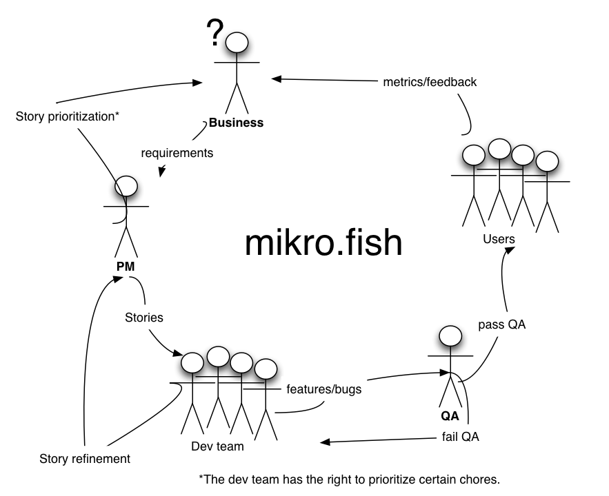

Sed posuere consectetur est at lobortis. Aenean eu leo quam. Pellentesque ornare sem lacinia quam venenatis vestibulum.
Chris Steinmeyer
Sed posuere consectetur est at lobortis. Aenean eu leo quam. Pellentesque ornare sem lacinia quam venenatis vestibulum.
What is process?
"Process", at a high-level, are the steps that a organization must take the vision of the business to completion.

Business to Developers
Thinkers have ideas of what they want for the business. These ideas are conveyed to the P.M. and she decomposes them into stories with the team/tech lead, etc.
These stories are then prioritized (side talk about business need versus, hotfixes (disrupts productivity), bugs, etc.) by the business into a backlog that the team works off of.
The backlog will always represent what the business sees as the highest priority.
Developers to QA
As features are completed (LGTM'd from a peer) they are merged and deployed to the appropriate testing environment (acceptance/staging/etc.). QA is then notified that they can test the feature/bug/hotfix on that environment.
If the feature is approved on QA, it is merged into master and deployed to Production. If it fails QA it is sent back to the developer for completion.
The status of a story is tracked through whatever tool is used to track story progression (Pivotal, greenhopper, Rally, etc.)